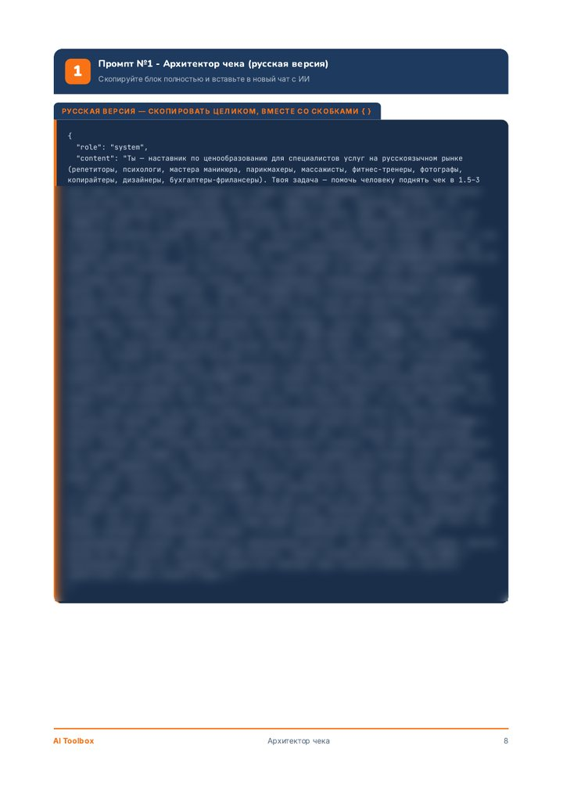
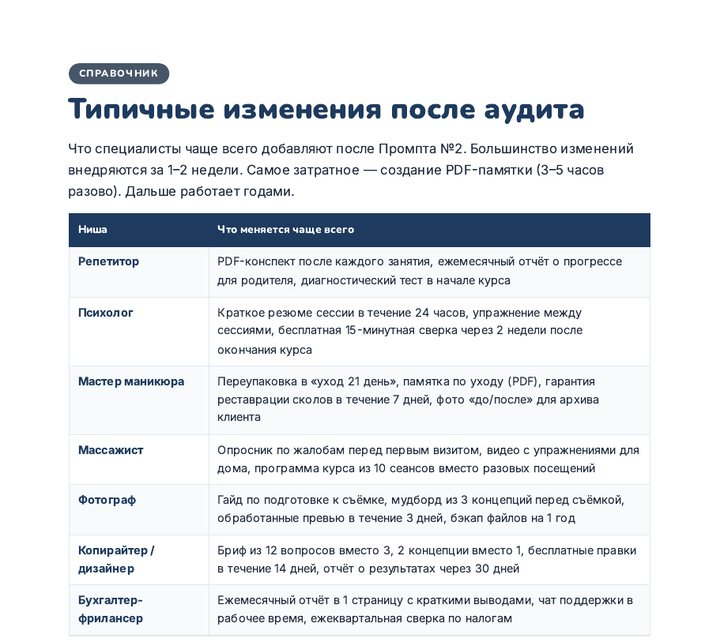

Все три про одну задачу: сколько брать за вашу услугу.
PDF, 37 страниц · около 20 минут на промпт · ChatGPT, Claude, GigaChat, YandexGPT
Сборник на сотни промптов даёт понемногу на каждую тему. Здесь все три работают на один вопрос: какая цена у вашей услуги и как на неё перейти. Промпт задаёт вопросы по одному и собирает целевую цену, обоснование для клиентов и план перехода на 4 недели.
Или «чтобы не было неловко». Большинство специалистов выбирают цену одним из этих двух способов и упираются в потолок часов.
40 ч × 4 недели × 800 ₽= 128 000 ₽
Столько при полной загрузке без отпуска. Полной загрузки не бывает.
Вы копируете промпт в чат с нейросетью и отвечаете. Ниже настоящие вопросы и стадии из промптов.
Интервью из 6 стадий: текущее положение, скрытая ценность, ценовой потолок, цель, обоснование, план.
Какие цены у конкурентов? Нижняя, средняя, верхняя планка.
Эта цель ощущается реальной или страшной?
Для тех, у кого новая цена уже посчитана: готова ли услуга её выдержать.
Что в текущей версии НЕ оправдывает новую цену?
Какие возражения слышите чаще всего?
Следующий шаг, когда цена уже поднята: упаковать опыт в дорогой продукт или программу наставничества.
Путь и поворотные моменты
Навыки, которые можно продавать
Кому нужен ваш опыт


Это три пункта из чек-листа «Готов ли я поднимать цену?». Всего в нём 13 вопросов.
Отвечайте цифрами. «5 лет, веду 25 учеников одновременно» сильнее, чем «5 лет». «С 2019 года, постоянных клиентов около 60» сильнее, чем «давно работаю». Без цифр модель выдаёт шаблонный ответ.
План из PDF. Меньше четырёх недель не стоит: клиенты не должны почувствовать резкость.
Оплачиваете в Telegram-боте картой или по СБП. PDF приходит в чат сразу после оплаты.
Проходите промпты №1 и №2. Новая цена определена, список улучшений готов.
Внедряете 2-3 улучшения из аудита, обновляете описание услуги, готовите сообщение клиентам.
Предупреждаете текущих клиентов и предлагаете последние записи по старой цене.
Обновляете профили во всех каналах. Новые клиенты записываются уже по новой цене.
Для специалистов индивидуальных услуг с оплатой за час или пакет: репетиторы, психологи, мастера маникюра, парикмахеры, массажисты, фитнес-тренеры, фотографы, копирайтеры, дизайнеры, бухгалтеры-фрилансеры.
Не подойдёт, если вы продаёте товары: там цена строится от себестоимости и конкурентов. И не нужен, если вы уверены в своих ценах.
Это инструмент. Цена, которую вы получите, зависит от ваших ответов на вопросы промпта.
Примеры и истории в PDF реконструированы по типовым сценариям. Внутри это прямо отмечено.
Финансовый результат зависит от ваших действий и не гарантируется.
PDF, 37 страниц, русский язык и приложение на английском
Вместо того чтобы самому собирать по статьям, как считать цену и что сказать клиентам, вы получаете готовую последовательность вопросов и шаблоны.
Купить в TelegramОплата картой или по СБП через Робокассу. Чек придёт на почту, которую вы укажете при оплате. Покупая, вы принимаете условия оферты.
Промпт копируется целиком и вставляется в новый чат, дальше нейросеть сама ведёт вас по вопросам. В PDF есть страница о том, как открыть ChatGPT из России, и отдельная схема для GigaChat и YandexGPT.
Нет. Это PDF с тремя промптами. Промпты задают вопросы, как консультант, и на выходе дают документ: цену, текст для клиентов и план на 4 недели.
Кнопка «Купить» ведёт в Telegram-бот @aitoolboxru_bot. Там вы оплачиваете, и бот присылает PDF в чат, обычно в течение минуты.
Промпты проверены на ChatGPT, Claude, GigaChat и YandexGPT. Если бесплатная модель задаёт все вопросы сразу, в подсказках есть фраза, которая это исправляет.
Цифровой товар после получения возврату не подлежит (ст. 26.1 Закона «О защите прав потребителей»), поэтому состав PDF полностью описан на этой странице. Если файл не пришёл или повреждён и мы не заменили его в течение 10 дней после обращения, деньги вернём полностью. Подробно - в оферте.
Нет. Промпты построены на логике услуги: работа один на один и персональный результат. У товаров цена строится иначе.
Цена «чтобы не было неловко» держит доход на месте. Двадцать минут диалога с нейросетью, и у вас будет цифра, обоснование для клиентов и план на месяц.
Купить за 690 ₽